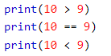

Az első szó egy adattípus, a Boolean neve a Pythonban. A szó jelentése Bool-i, de magyarra “logikai” változóként fordítjuk. Értéke True (igaz), vagy False (hamis) lehet. A második egy függvény, ami logikai értékké alakítja azt, ami a zárójelben van.
A programozás során gyakran tudnod kell, hogy egy kifejezés igaz vagy hamis. Bármilyen kifejezést kiértékelhet a Pythonban, és a két válasz egyikét kaphatja, igaz vagy hamis. Ha két értéket összehasonlít, a kifejezés kiértékelődik, és a Python a logikai választ adja vissza:
